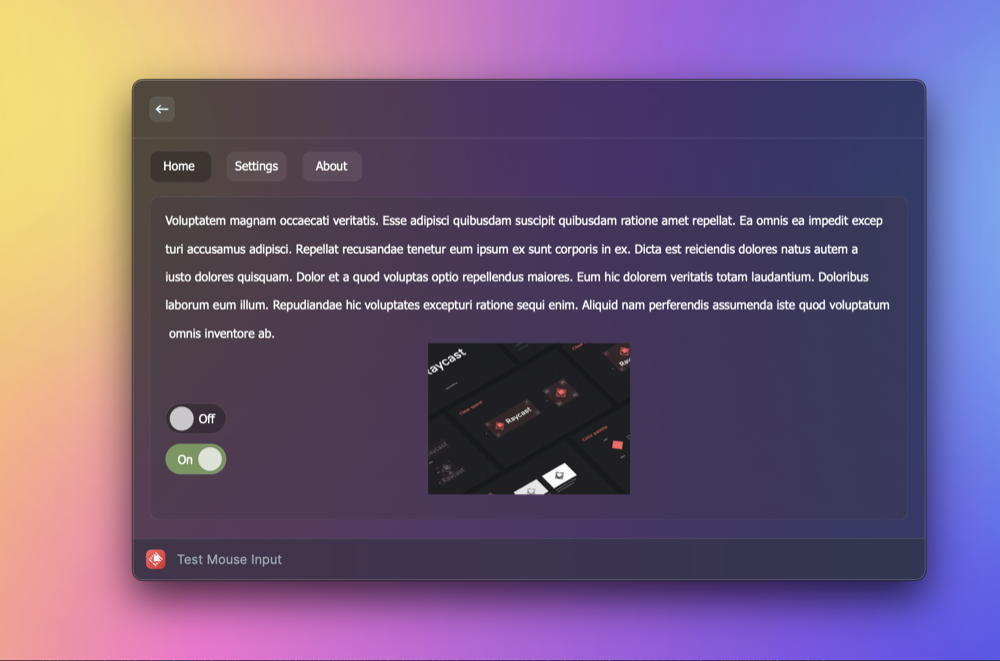

A customized Detail component for Raycast that enables interaction via mouse clicks.
npm install clickable-detail
Upon install, the package will automatically add two .scpt scripts to your extension's assets folder, i.e.:
These scripts are necessary for the package to work, but you can modify them if you wish (e.g. if you want to customize the SVG that is used to render the clickable content). Use Script Editor on your Mac to view/edit the source code.
import {
ClickableDetail,
DynamicSVG,
HTML,
INPUT,
Image,
Polygon,
Toggle,
usePreloadedImages,
useToggleDelegate,
} from "clickable-detail";
import { runAppleScript } from "run-applescript";
export default function Command() {
// Preload images so they are ready to be used when the SVG is rendered
const images = usePreloadedImages(["https://placeholder.pics/svg/200x100"]);
// Delegates are used to keep track of state
const toggleDelegate = useToggleDelegate(false);
return (
<ClickableDetail isLoading={images.length != 1} waitUntilAllLoaded={true}>
<DynamicSVG>
{/* High-level, stateful components provided (More to be added soon) */}
<Toggle
x={0}
y={0}
delegate={toggleDelegate}
label="Option 1"
onClick={() => runAppleScript(`display dialog "You toggled Option 1"`)}
/>
{/* Include external images */}
<Image x={0} y={50} width={200} height={100} {...images[0]?.image.data} />
{/* Click handlers can access the (x, y) coordinate of the click */}
<Polygon points="300,100 350,25 350,75 400,0" fill="red" onClick={(loc) => console.log(`Clicked at (${loc.x}, ${loc.y})`)}/>
{/* Supports HTML using JSX syntax */}
<HTML y={200}>
<head>
{/* Supports applying styles to HTML elements */}
<style type="text/css">
{`
#paragraph1 {
color: red;
}
`}
</style>
</head>
<body>
{/* Use React's built-in HTML components */}
<p id="paragraph1">Can render arbitrary HTML content</p>
<form>
{/* For additional functionality, use package-provided components -- just uppercase the normal tag and add, e.g., a click handler */}
<INPUT type="submit" value="Submit" onClick={() => console.log("Submitted!")} x={10} y={215} width={55} height={25} />
</form>
</body>
</HTML>
</DynamicSVG>
</ClickableDetail>
);
}
The ClickableDetail component works similarly to the built-in Detail component, but with a few key differences:
markdown prop — it will be automatically generated from ClickableDetail's children.metadata prop is not supported, but will be in the future.There two two main aspects to this package:
For the first part, the ClickableDetail component uses a dynamically generated SVG to display content beyond what Detail normally supports. The SVG can be sourced from anywhere, but the provided DynamicSVG, built specifically for this package, is highly recommended. It supports not just creating SVGs using JSX syntax, but also embedding HTML content, external URLs, and click handlers for SVG elements.
To enable mouse clicks, the ClickableDetail component uses a JXA child process to monitor mouse clicks on the Raycast window. When a click is detected, ClickableDetail will determine if the click was on an SVG element that has a click handler. If so, the click handler will be called.
If you have any questions about Clickable Detail that are not addressed in the documentation, or if you just want to talk, feel free to email stephen.kaplan@maine.edu.